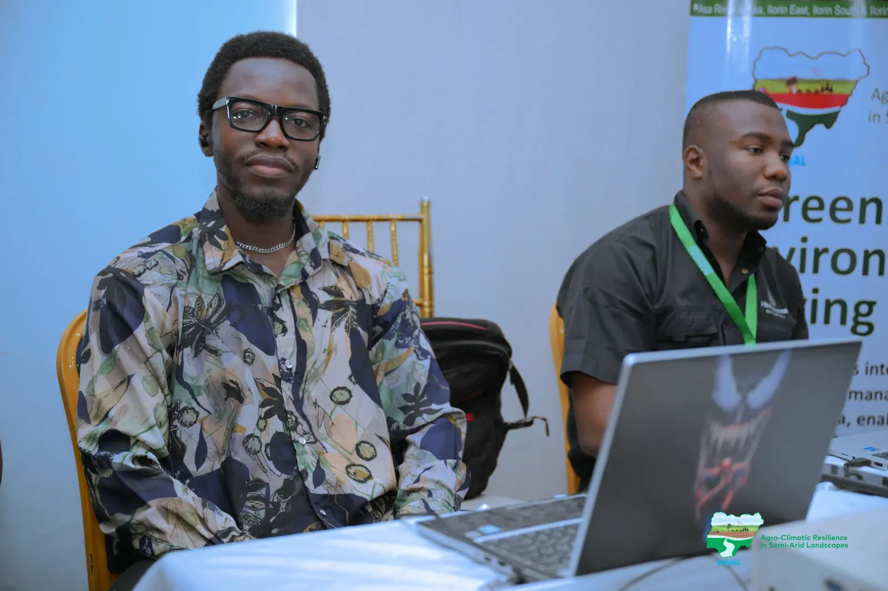
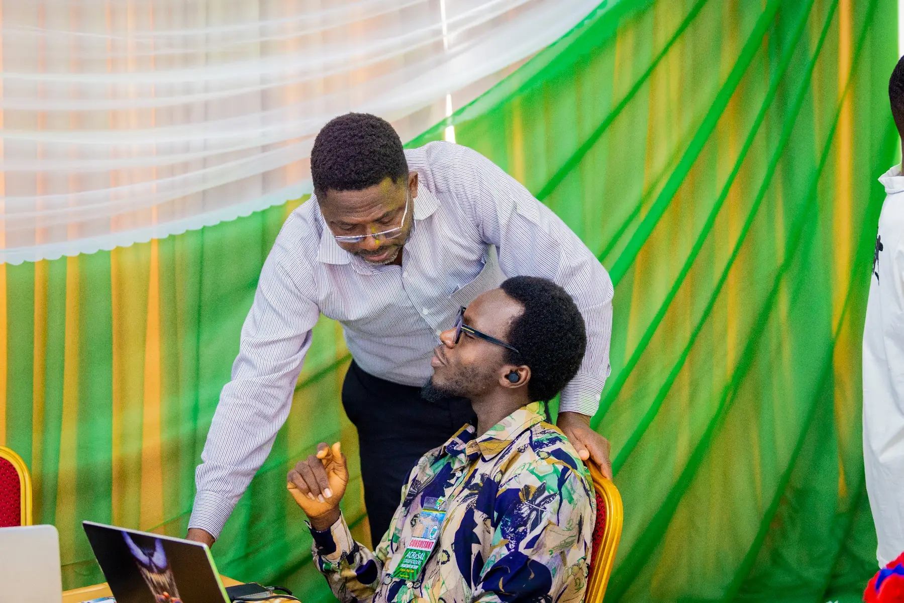
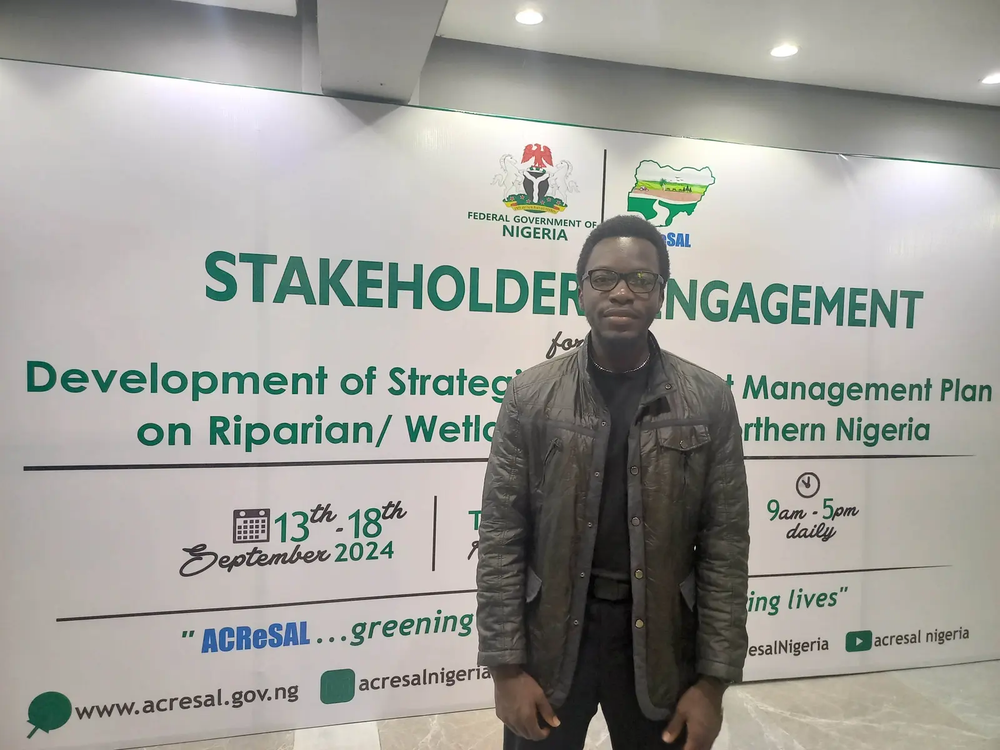

Evidence first
I build conclusions from traceable datasets, appropriate methods and transparent assumptions.
About me
I am a GIS Analyst who enjoys using technology to understand the earth, water systems and the communities that depend on them.

Stakeholder engagement · ACReSALMy story
My background in Geology and Mineral Resources Engineering shaped the way I read landscapes. GIS gave me the tools to connect terrain, water, land use, infrastructure and communities within one analytical framework.
Since beginning my GIS career in 2019, I have worked on catchment-management programmes, dam and irrigation studies, flood-risk assessments, groundwater investigations, mining-impact studies and environmental baselines. At MECON Services Ltd., I support multidisciplinary teams from early data preparation and fieldwork through analysis, cartography and technical reporting.
I am especially interested in work where spatial evidence can improve climate resilience, water-resource management and environmental planning in Nigeria and across Africa.
What guides my work
Strong GIS work should be technically sound, understandable and grounded in the place it represents.
I build conclusions from traceable datasets, appropriate methods and transparent assumptions.
Environmental problems connect terrain, water, land use, infrastructure and human activity.
Field observations and stakeholder knowledge make regional analysis more useful and realistic.
Maps and reports should help both technical teams and decision-makers understand what matters.
Beyond the desktop
For the Strategic Catchment Management Plans, I supported engagements and spatial data integration across the 19 Northern States and the FCT. Those conversations helped convert local experience and institutional priorities into mapped evidence.
Explore the catchment project

Education
Diploma in Project, Quality, Safety, Environment, Risk & Sustainability ManagementQHSES Leadership Academy
B.Tech. GeologyFederal University of Technology Minna
ND Mineral Resources EngineeringPetroleum Training Institute